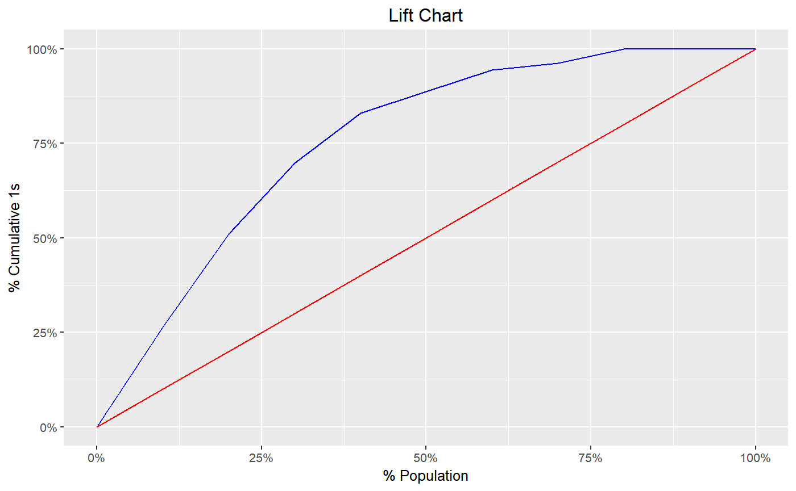

Gains table
blr_gains_table(model, data = NULL) # S3 method for blr_gains_table plot(x, title = "Lift Chart", xaxis_title = "% Population", yaxis_title = "% Cumulative 1s", diag_line_col = "red", lift_curve_col = "blue", plot_title_justify = 0.5, ...)
| model | an object of class |
|---|---|
| data | a tibble |
| x | an object of class |
| title | plot title |
| xaxis_title | x axis title |
| yaxis_title | y axis title |
| diag_line_col | diagonal line color |
| lift_curve_col | color of the lift curve |
| plot_title_justify | horizontal justification on the plot title |
| ... | other inputs |
a tibble
model <- glm(honcomp ~ female + read + science, data = blorr::hsb2, family = binomial(link = 'logit')) # gains table blr_gains_table(model)#> # A tibble: 10 x 12 #> decile total `1` `0` ks tp tn fp fn sensit~ specif~ accu~ #> <int> <int> <int> <int> <dbl> <int> <int> <int> <int> <dbl> <dbl> <dbl> #> 1 1 20 14 6 22.3 14 141 6 39 26.4 95.9 77.5 #> 2 2 20 13 7 42.1 27 134 13 26 50.9 91.2 80.5 #> 3 3 20 10 10 54.2 37 124 23 16 69.8 84.4 80.5 #> 4 4 20 7 13 58.5 44 111 36 9 83.0 75.5 77.5 #> 5 5 20 3 17 52.6 47 94 53 6 88.7 63.9 70.5 #> 6 6 20 3 17 46.7 50 77 70 3 94.3 52.4 63.5 #> 7 7 20 1 19 35.7 51 58 89 2 96.2 39.5 54.5 #> 8 8 20 2 18 27.2 53 40 107 0 100 27.2 46.5 #> 9 9 20 0 20 13.6 53 20 127 0 100 13.6 36.5 #> 10 10 20 0 20 0 53 0 147 0 100 0 26.5# lift chart k <- blr_gains_table(model) plot(k)